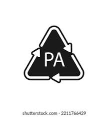

POLIAMIDA

Una Poliamida es un termoplástico que ofrece una combinación optima de resistencia mecánica, al desgaste, rigidez y la tenacidad. También es bien considerada por ser un buen aislante eléctrico y poseer una buena resistencia química. Ideal para la fabricación de elementos mecánicos y para el mantenimiento industrial.